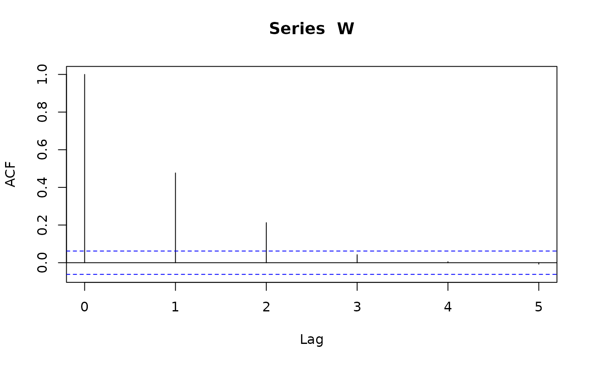
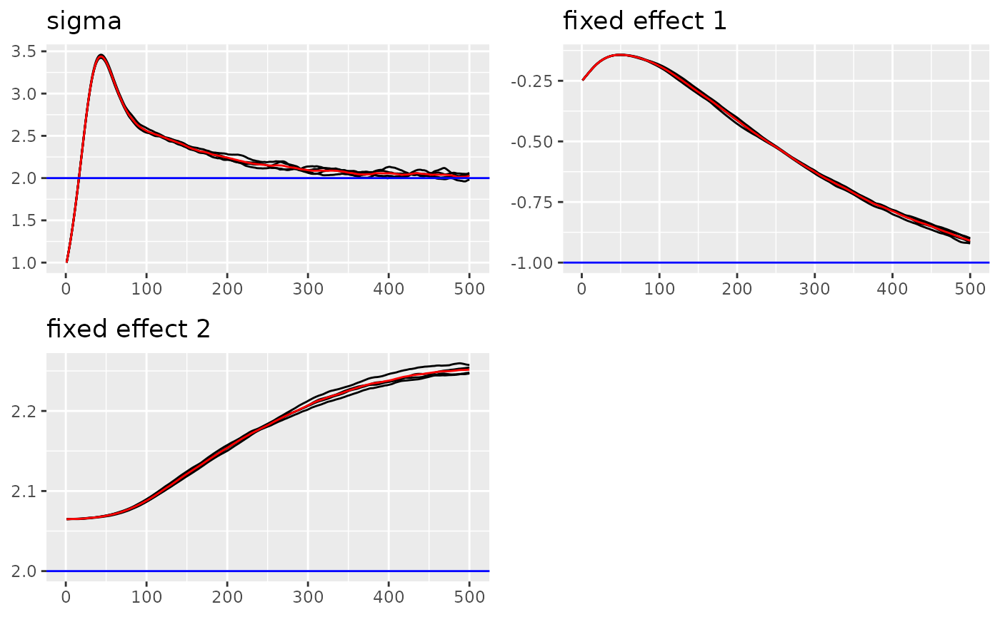
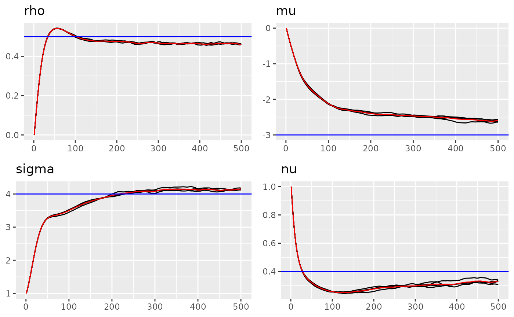

In this vignette, we will introduce the autoregressive model in
ngme2.
Description
An autoregressive model of order 1 (AR(1)) specifies that the output variable depends linearly on its own previous values and on a stochastic term. The simplest AR model is an AR(1) model, which is given by:
\[\begin{align} X_1 &= \frac{1}{\sqrt{1-\rho^2}} \epsilon_1, \\ X_i &= \rho X_{i-1} + \epsilon_i, \; i = 2, \dots , n, \end{align}\] where \(|\rho| < 1\), \(\epsilon_1, ..,\epsilon_n\) is either i.i.d. NIG or Gaussian noise.
It is easy to verify that \[ K{\bf X} = \boldsymbol\epsilon,\] where \({\bf X} = (X_1, \dots, X_n)\), \({\boldsymbol \epsilon} = (\epsilon_1, \dots, \epsilon_n)\), and \[ K = \begin{bmatrix} \sqrt{1-\rho^2} \\ -\rho & 1 \\ & \ddots & \ddots \\ & & -\rho & 1 \end{bmatrix}. \]
Usage
Use the f(model="ar1") (in formula) to specify a AR(1)
model. Notice that AR(1) process is only well defined in the integer
mesh (it can have gaps). In the following example, we generate mesh from
2001 to 2007 (7 nodes).
library(ngme2)
#> This is ngme2 of version 0.6.0
#> - See our homepage: https://davidbolin.github.io/ngme2 for more details.
set.seed(16)
m1 <- f(c(2001, 2005, 2003, 2007),
model="ar1", rho=-0.5, noise = noise_normal()
)
m1$operator$K
#> 7 x 7 sparse Matrix of class "dgCMatrix"
#>
#> [1,] 0.8660254 . . . . . .
#> [2,] 0.5000000 1.0 . . . . .
#> [3,] . 0.5 1.0 . . . .
#> [4,] . . 0.5 1.0 . . .
#> [5,] . . . 0.5 1.0 . .
#> [6,] . . . . 0.5 1.0 .
#> [7,] . . . . . 0.5 1
# the internal A matrix tell how to map from mesh to our given index
m1$A
#> 4 x 7 sparse Matrix of class "dgCMatrix"
#>
#> [1,] 1 0 . . . . .
#> [2,] . . . . 1 0 .
#> [3,] . . 1 0 . . .
#> [4,] . . . . . 0 1Simulation
Doing simulation in Ngme2 is simple. Just pass the corresponding
model into simulate function.
n_obs <- 1000
day <- 1:n_obs
ar1_model <- f(day, model="ar1", rho = 0.5,
noise = noise_nig(mu = -3, sigma = 4, nu=0.4))
W <- simulate(ar1_model, seed = 16, nsim=1)[[1]]
# 1 sample process of our model
plot(W, type="l")
# check the acf to see the correlation
acf(W, lag.max = 5)
Estimation
In this part we will show how to estiamte the AR model using
ngme function. Here we can use control_opt to
modify the control variables regarding estimation part for the
ngme function. See ?control_opt for more
optioins.
# add some fixed effects and measurement noise
feff <- c(-1, 2)
x1 = runif(n_obs)
x2 = rexp(n_obs)
X <- (model.matrix(~0+x1+x2))
Y <- as.numeric(X %*% feff) + W + rnorm(n_obs, sd = 2)
# Fit the model with the AR1 model
ngme_out <- ngme(
Y ~ 0 + x1 + x2 + f(
1:n_obs,
name = "my_ar",
model = "ar1",
noise = noise_nig()
# control = control_f(numer_grad = T)
),
data = data.frame(x1=x1, x2=x2, Y=Y),
control_opt = control_opt(
burnin = 100,
iterations = 1000,
std_lim = 0.01,
n_parallel_chain = 4,
stop_points = 20,
print_check_info = FALSE,
verbose = FALSE,
seed = 3,
preconditioner = "fast",
precond_by_diff_chain = TRUE,
precond_eps = 1e-5
)
)
#> Starting estimation...
#>
#> Starting posterior sampling...
#> Posterior sampling done!
#> Note:
#> 1. Use ngme_post_samples(..) to access the posterior samples.
#> 2. Use ngme_result(..) to access different latent models.
ngme_out
#> *** Ngme object ***
#>
#> Fixed effects:
#> x1 x2
#> -1.65 2.11
#>
#> Models:
#> $my_ar
#> Model type: AR(1)
#> rho = 0.47
#> Noise type: NIG
#> Noise parameters:
#> mu = -2.6
#> sigma = 4.03
#> nu = 0.346
#>
#> Measurement noise:
#> Noise type: NORMAL
#> Noise parameters:
#> sigma = 2
#>
#>
#> Number of replicates is 1
# traceplot of fixed effects and measurementn noise
traceplot(ngme_out)
# traceplot of ar1 model
traceplot(ngme_out, "my_ar")
# comparing the density of the noise estimated and the noise simulated
plot(ngme_out$replicates[[1]]$models[[1]]$noise,
noise_nig(mu = -3, sigma = 4, nu=0.4))